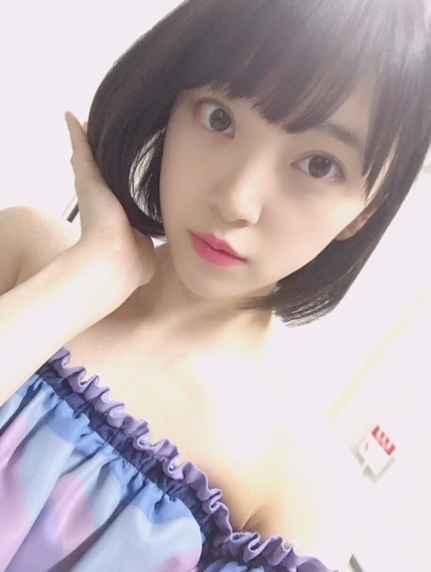

2018/0702Mon玉子って白いよね？
ちょっとだけ日焼けをして
しょんぼり気分です。笑
肌白いね！って言っていただける
事が凄く嬉しかったので
悔しいなぁ。
美白ケア頑張ります☺︎

21枚目シングル
選抜、フロントに選んでいただきました！
いつも応援してくださる皆さんの
おかげです。
ありがとうございます。
そして絢音！
おめでとう✨✨
ずっと夢見てました
一緒に楽しもうね！笑おうね！
私が今まで支えてもらった分
なんでも力になります。
3期からは
梅ちゃん れんかが初選抜！
おめでとう〜(^-^)
梅ちゃんはしっかり者で
スタイルが良いなぁって
いつも見てました。笑
れんかは甘えん坊だけど生意気で
かわいい妹みたいな存在！
よろしくね♪
色んなポジションを経験させて
いただけて本当に嬉しいです。
そして、この場所が今の私の場所。
そこで最大限に輝けるよう
私らしく頑張ります！
今年の夏も乃木坂46を
よろしくお願いします。

明日は(予定なので時間変更があるかもですが)
20:00〜
showroom のぎおびの配信をします。
見てね〜！
久しぶりのshowroom楽しみ♪
では☺︎
2018/07/02 17:30
コメント(548)
未央ちゃんこんばんはるじおん
地震あったけど大丈夫だったかな？神宮球場は規制退場中だったんだけど何ともなかったよ。。メンバーのみんなが心配だった。
6thyearBirthdayLIVE2日目お疲れさま！
今日は雨降らなくて良かったね〜
バレッタ聴けたのが嬉しかった！未央ちゃんカッコよかったしとても綺麗だったよ。ダンスしなやかだね
シンクロニシティ披露時の両会場のシンクロが今日は上手くいって綺麗だったなぁ、モニターに映ってたけど未央ちゃんは見れたのかな？後で映像で確認できるのかな？？ぜひ見てみてね！
それから今日は会場が神宮球場だったから未央ちゃんがいてくれて嬉しかった！本当に！！
昨日は秩父宮コールして今日は神宮コール。一緒に出来て嬉しい〜未央ちゃんライブ中お腹すいてたの？？笑
席がね、センターステージの角のとこだったんだけど、乃木坂の詩の途中で未央ちゃんがタオル見つけて手振ってくれて最高の気分！幸せの頂点！！
握手会の時に46時間テレビのタオルが良いって言ってくれたから、持ってったかいがありました！！
帰ってきてからも笑って手振ってくれた姿が焼きついて離れない。楽しい時間と素敵な思い出をありがとう！
明日も秩父宮会場に参加するからよろしくね。もちろん未央ちゃん推し全開
明日も雨降らないといいね。。最終日、最高の思い出を一緒に作りろーう！未央ちゃん大好きだ〜
2日連続で動いて疲れも溜まってるだろうからゆっくり休んでね。。今日も一日お疲れさま
おやすみおな
地震あったけど大丈夫だったかな？神宮球場は規制退場中だったんだけど何ともなかったよ。。メンバーのみんなが心配だった。
6thyearBirthdayLIVE2日目お疲れさま！
今日は雨降らなくて良かったね〜
バレッタ聴けたのが嬉しかった！未央ちゃんカッコよかったしとても綺麗だったよ。ダンスしなやかだね
シンクロニシティ披露時の両会場のシンクロが今日は上手くいって綺麗だったなぁ、モニターに映ってたけど未央ちゃんは見れたのかな？後で映像で確認できるのかな？？ぜひ見てみてね！
それから今日は会場が神宮球場だったから未央ちゃんがいてくれて嬉しかった！本当に！！
昨日は秩父宮コールして今日は神宮コール。一緒に出来て嬉しい〜未央ちゃんライブ中お腹すいてたの？？笑
席がね、センターステージの角のとこだったんだけど、乃木坂の詩の途中で未央ちゃんがタオル見つけて手振ってくれて最高の気分！幸せの頂点！！
握手会の時に46時間テレビのタオルが良いって言ってくれたから、持ってったかいがありました！！
帰ってきてからも笑って手振ってくれた姿が焼きついて離れない。楽しい時間と素敵な思い出をありがとう！
明日も秩父宮会場に参加するからよろしくね。もちろん未央ちゃん推し全開
明日も雨降らないといいね。。最終日、最高の思い出を一緒に作りろーう！未央ちゃん大好きだ〜
2日連続で動いて疲れも溜まってるだろうからゆっくり休んでね。。今日も一日お疲れさま
おやすみおな
みおなちゃん！ライブラリーお疲れ様！テレビ出演も見ました！！！体調大丈夫ですか？無理せず頑張ってくださいね＼(^_^)／みおなちゃんが頑張ってるので、わたしも仕事上がんばります！体調にお気をつけて下さい！
おはようございます
昨日はライブ、musicday お疲れ様でございました
坂道AKB、シンクロニシティ聴けて至福の時間でした
大雨で被害出てますが地元の方は大丈夫でしょうか？
千葉では地震もありましたし
今日も素敵なライブになりますように
暑くなるみたいなので体調お気をつけ下さい
昨日はライブ、musicday お疲れ様でございました
坂道AKB、シンクロニシティ聴けて至福の時間でした
大雨で被害出てますが地元の方は大丈夫でしょうか？
千葉では地震もありましたし
今日も素敵なライブになりますように
暑くなるみたいなので体調お気をつけ下さい
こんにちは～
、、ライブ、、最終日は、、良く晴れそうだね〜
、、熱中症に、注意して、、頑張ってね〜
、、そう言えば、、玉子も、、王子様も、、（笑）白いよ〜
、、じゃあ、、またね〜
、、ライブ、、最終日は、、良く晴れそうだね〜
、、熱中症に、注意して、、頑張ってね〜
、、そう言えば、、玉子も、、王子様も、、（笑）白いよ〜
、、じゃあ、、またね〜
21枚目シングル フロントおめでとう✨✨
21枚目も頑張ってぇ！！✨✨
昨日のバスラ、神宮も楽しかったです！！未央奈を間近で見たのが3月31日の全握以来で嬉しかったぁ！！❤
コメント書くの遅くなってごめんなさい
また、ブログ更新楽しみにしてます！！✨✨
( o≧д≦)oｶﾞﾝﾊﾞﾚｰ!!未央奈❤
21枚目も頑張ってぇ！！✨✨
昨日のバスラ、神宮も楽しかったです！！未央奈を間近で見たのが3月31日の全握以来で嬉しかったぁ！！❤
コメント書くの遅くなってごめんなさい
また、ブログ更新楽しみにしてます！！✨✨
( o≧д≦)oｶﾞﾝﾊﾞﾚｰ!!未央奈❤
未央奈ちゃんおはよう
昨日はバスラ2日目楽しかったよ(´∀｀)
THE MUSIC DAY見てたよ
今日はバスラ最終日楽しみ
斉藤貴巳
昨日はバスラ2日目楽しかったよ(´∀｀)
THE MUSIC DAY見てたよ
今日はバスラ最終日楽しみ
斉藤貴巳
バースデーライブ、１日目・２日目お疲れ様でした。今日も二日間を超えるパフォーマンスをお願いします。
実家は大丈夫ですか。記録的豪雨で岐阜県も特別警報(大雨)が出てます。気がかりだと思いますが、最高の一日にして下さい。
実家は大丈夫ですか。記録的豪雨で岐阜県も特別警報(大雨)が出てます。気がかりだと思いますが、最高の一日にして下さい。
お疲れ様です。3日目ですね。今日もあるので簡潔に。明日退院。乃木坂すごいですね。チェックはしています。みんな疲れている中で本当に頑張っているんだね。今日の応援は私の念ではなく、力にはならないかもしれませんが、気持ち(感謝)の言葉です。いつも一人でいて寂しい気持ちで生活していた自分を乃木坂の歌が勇気をくれました。いつ駄目になってもおかしくない人生でしたが、やっとこの歳で光が見えてきました。乃木坂のメンバー・関係者の方たち等々、本当に有り難うございました。病院の販売店で、7月5日何か思い出が一つ欲しいなと思い、メロンパンなちゃんの人形を買いました。特に意味はないですが。7月7日乃木坂46がこれからもずっとダントツ一番のアイドルグループでありますように。そして無理だと思いますが、ライブ・握手会行ってみたいです。【七夕の短冊より】。失礼いたします。
昨日は、ライブにTHE MUSIC DAY2018に本当にお疲れ様でした。
今日の東京シンクロライブ最終日ですが疲れ溜まってないかな？
今日も暑いので、体には気をつけて頑張って下さいね。
水分補給も忘れずに。
今日の東京シンクロライブ最終日ですが疲れ溜まってないかな？
今日も暑いので、体には気をつけて頑張って下さいね。
水分補給も忘れずに。
堀ちゃん、1、2日目ライブ行きました！
堀ちゃん、とってもとってもかわいいかった〜
3日目行けないけど、頑張ってね〜
堀ちゃん、大好きだよー
堀ちゃん、とってもとってもかわいいかった〜
3日目行けないけど、頑張ってね〜
堀ちゃん、大好きだよー
チャァオ～～!☆彡
ミオッキ～～～～⤴⤴⤴⤴⤴
こんにちは～～～⤴⤴⤴❤❤❤❤❤❤❤❤❤❤❤笑顔
(*^▽^)/★*☆♪
きのうのミュージックディお疲れsummerです⤴⤴⤴❤❤❤❤❤❤❤❤❤❤❤笑顔
真夏のライブのあとに、２度も歌われてミオッキ～～の凄さに感動です❤❤❤❤❤❤❤❤❤
今日の神宮の真夏ライブ最終日無事成功するように・・・
またミオッキ～～の健康を、祈っているよぉ～～⤴⤴⤴⤴⤴❤❤❤❤❤❤笑顔
それじゃ～ミオッキ～～～～⤴⤴⤴⤴
いっぱい楽しんできてねぇ‼❤❤❤❤❤❤❤❤❤❤❤❤笑顔
ヾ(@゜▽゜@)ノ
またねぇ❕❤❤❤❤❤❤❤❤笑顔
バイバイ❕❤❤❤❤❤❤❤❤笑顔
☆大人しい、おすまし！より☆彡
神宮3日目頑張ってください！
あ、神宮だけじゃないね笑
秩父宮もだ！笑
早く21thのMVみたいな〜
ばいび〜
あ、神宮だけじゃないね笑
秩父宮もだ！笑
早く21thのMVみたいな〜
ばいび〜
今日もライブ頑張って。
応援してます。
応援してます。
未央ちゃんおはよう！
メール見たよ、ありがとう。体調大丈夫？？
疲れてるし、天気も悪かったし、今度は暑いし。無理しないで体大事にしてね！
苦しそうに必死に踊る未央ちゃん見るくらいなら、振り小さくても良いから笑顔の未央ちゃんが見たい！ていう個人的な意見だけど、、湿疹も全然気にならないよ。きっとそこまでは見えないよ！むしろ湿疹もひっくるめて未央ちゃん好きだよ〜
明日からも仕事あるだろうから無理しないでほしい、けど今日も最後まで6周年を一緒にお祝いできたら嬉しいなぁ
応援してるからね。今日も最高に楽しい時間を過ごそうね！
メール見たよ、ありがとう。体調大丈夫？？
疲れてるし、天気も悪かったし、今度は暑いし。無理しないで体大事にしてね！
苦しそうに必死に踊る未央ちゃん見るくらいなら、振り小さくても良いから笑顔の未央ちゃんが見たい！ていう個人的な意見だけど、、湿疹も全然気にならないよ。きっとそこまでは見えないよ！むしろ湿疹もひっくるめて未央ちゃん好きだよ〜
明日からも仕事あるだろうから無理しないでほしい、けど今日も最後まで6周年を一緒にお祝いできたら嬉しいなぁ
応援してるからね。今日も最高に楽しい時間を過ごそうね！
みおなちゃん、こんにちは。
バスラ２日目お疲れ様でした。
MUSIC DAY、僕は見たよ。録画しながら見たよ。みおなちゃん、めっちゃかわいかったよ。
みおなちゃん、２１ｔｈシングル、フロントメンバー、福神メンバー入りおめでとうございます。
２１ｔｈシングル、全タイプ絶対買うね。僕は発売日が、めっちゃ楽しみです。
１枚目写メのみおなちゃん、めっちゃかわいいです。
みおなちゃん、体調に気をつけて仕事頑張ってね。
またコメントするね。
バスラ２日目お疲れ様でした。
MUSIC DAY、僕は見たよ。録画しながら見たよ。みおなちゃん、めっちゃかわいかったよ。
みおなちゃん、２１ｔｈシングル、フロントメンバー、福神メンバー入りおめでとうございます。
２１ｔｈシングル、全タイプ絶対買うね。僕は発売日が、めっちゃ楽しみです。
１枚目写メのみおなちゃん、めっちゃかわいいです。
みおなちゃん、体調に気をつけて仕事頑張ってね。
またコメントするね。
こんにちは、未央奈さん
今日がバスラ最終日だね
体調が気になるけど無事乗り越える事を
願ってます
願うと言えば平成最後の七夕は何を願い
ましたか？
未央奈さんの愛が全国に届くといいな
「THE MUSIC DAY2018」観ました
公演後のはしごは本当にお疲れ様でした
ミディアムボブから正真正銘のショート
ボブにヘアチェンジしていたね
これぞ堀未央奈の原点と勝手に思ってる
さすがに今回ウインクはなかったか。笑
でも坂道AKBも熱いパフォーマンスで満足！
それでは頑張ってね！
ブログ気長に待ってます
軽やか堀ちゃんで臨んだバースデイライブお疲れ様でした。
やぁ(・∀・)ノ未央奈ちゃん♡こんばんは！
りょーへー(R.N.イナダウアーびーむ)だよ♪
バスラ最終日、お疲れ様～～！初の2会場ライブだったし、昨日は歌番組もあって、バタバタで大変な3日間だったんじゃない？お疲れだろうから、今日くらいはゆっくり休んで欲しいな！ライブのお話、聞かせてね！
俺も湿疹持ちだから、未央奈ちゃんの気持ち分かるよ！辛いんだよねぇ…！特にこの時期は気候的に酷くなっちゃう！お薬塗って、早く良くなってほしい！
今日食べたつけ麺、めちゃくちゃ美味しかったなぁ！
#毎日コメント
#ライブお疲れ様
#最近
#色んなところに顔出しすぎてる
#我ながらよく回ってるなって思う
#ちゃんとこなさなきゃ
#帰ったら
#ぶどう食べよっかな
#ぶどう好きすぎる
#明日も楽しみおな♡
#おやすみおな(*￣▽￣)ノ~~ ♪
りょーへー(R.N.イナダウアーびーむ)だよ♪
バスラ最終日、お疲れ様～～！初の2会場ライブだったし、昨日は歌番組もあって、バタバタで大変な3日間だったんじゃない？お疲れだろうから、今日くらいはゆっくり休んで欲しいな！ライブのお話、聞かせてね！
俺も湿疹持ちだから、未央奈ちゃんの気持ち分かるよ！辛いんだよねぇ…！特にこの時期は気候的に酷くなっちゃう！お薬塗って、早く良くなってほしい！
今日食べたつけ麺、めちゃくちゃ美味しかったなぁ！
#毎日コメント
#ライブお疲れ様
#最近
#色んなところに顔出しすぎてる
#我ながらよく回ってるなって思う
#ちゃんとこなさなきゃ
#帰ったら
#ぶどう食べよっかな
#ぶどう好きすぎる
#明日も楽しみおな♡
#おやすみおな(*￣▽￣)ノ~~ ♪
こんばんは。セブンやよ(ฅ'ω'ฅ)♪
バスラ3日間お疲れさまでした
湿疹大丈夫でしたか？
楽しかったなら全部OKや(^-^)
未央奈の笑顔はマジ半端ねぇからね！
バスラは終わったけど、ツアーは始まったばかりだからね！
名古屋行くので楽しもうねー(*・∀-*)ﾉ
では、明日も1日楽しもうd(@^∇ﾟ)/ﾌｧｲﾄｯ♪
おやすみおな☪️
バスラ3日間お疲れさまでした
湿疹大丈夫でしたか？
楽しかったなら全部OKや(^-^)
未央奈の笑顔はマジ半端ねぇからね！
バスラは終わったけど、ツアーは始まったばかりだからね！
名古屋行くので楽しもうねー(*・∀-*)ﾉ
では、明日も1日楽しもうd(@^∇ﾟ)/ﾌｧｲﾄｯ♪
おやすみおな☪️
未央奈ちゃんバスラ最終日超楽しかったよ
3daysお疲れ様
新曲ジコチューでいこう！楽しい曲だね
未央奈ちゃんゆっくり休んでね
斉藤貴巳
3daysお疲れ様
新曲ジコチューでいこう！楽しい曲だね
未央奈ちゃんゆっくり休んでね
斉藤貴巳
未央奈ちゃん、こんばんは
バスラお疲れさまでした
2会場同時開催ということで
どんな感じのライブになるのか
ドキドキしながら参加したよ
感想を手短に
初日大雨でみんな大変そうだったね
アンコールのメンバー振り分けには
ビックリしました
二日目は翻って快晴、風もあって快適
サイリウムの演出が綺麗だったな
三日目は少し余裕も出て来たみたいで
みんな生き生きしてたよ
新曲や映画の発表などのサプライズに
驚かされ、ちはるちゃんと伊織ちゃんの卒業に
しんみりしました
結果、どの公演も楽しめました！
初めての試みで、もっとここはこうしたら
いいのになって思うところはあったけど
みんなの一生懸命さは伝わってきました
夏ツアーは始まったばかり
これから夏に向けて盛り上げていきましょう
取り急ぎ、お疲れさまでした
バスラお疲れさまでした
2会場同時開催ということで
どんな感じのライブになるのか
ドキドキしながら参加したよ
感想を手短に
初日大雨でみんな大変そうだったね
アンコールのメンバー振り分けには
ビックリしました
二日目は翻って快晴、風もあって快適
サイリウムの演出が綺麗だったな
三日目は少し余裕も出て来たみたいで
みんな生き生きしてたよ
新曲や映画の発表などのサプライズに
驚かされ、ちはるちゃんと伊織ちゃんの卒業に
しんみりしました
結果、どの公演も楽しめました！
初めての試みで、もっとここはこうしたら
いいのになって思うところはあったけど
みんなの一生懸命さは伝わってきました
夏ツアーは始まったばかり
これから夏に向けて盛り上げていきましょう
取り急ぎ、お疲れさまでした
３日間お疲れ様でございます
生番組だったり多忙だと思いますが…
体調崩さないようにゆっくり身体休めてください
本当にお疲れ様でございました
生番組だったり多忙だと思いますが…
体調崩さないようにゆっくり身体休めてください
本当にお疲れ様でございました
未央奈ちゃんありがとうございます！頑張ります‼頑張って下さい！観ました‼ありがとうございます‼
未央ちゃんこんばんはるじおん
6yearBirthdayLIVE3daysお疲れ様でした
無事に終わって何よりです。
2会場同時シンクロニシティライブということで、乃木坂46にとっても新たな挑戦になったと思うけどどうでしたか？
朝のメールでも湿疹でちゃったって言ってたし、体力的に厳しかったと思うけど未央ちゃんにとって最高に楽しかった！って思える3日間だったら良いな。。
ちなみに僕はとても楽しかったですよ！
東京ドーム以来の久しぶりのライブ参戦だったんだけど、やっぱり乃木坂46のライブは最高です！
スリーフォールドチョイス、バレッタ、あの教室。聴けたのが嬉しかったし、未央ちゃんからレスももらえて最高に幸せでした！
今回のライブ中ボブ未央奈になったおかげで見つけやすくて、スタンドの後ろの方からでもずっお姿を終えたよ〜
未央ちゃんは姿勢も良いししなやかなダンスでとても綺麗だった。
シンクロニシティライブってことでファンの間でも初日は戸惑いみたいなのも感じたんだけど、3日間やってくうちに段々洗練されていって3日目はスティックライトも揃ってすごく綺麗になっていったよ！シンクロニシティライブの成功に少しでも貢献できてたんじゃないかなと思う。。メンバーのみんなと共に成長出来てる感覚が嬉しくて、メンバー、スタッフ、ファンが一体になって作る時間と綺麗な景色が感動的で僕は今回のシンクロニシティライブとても好きだった。。未央ちゃんにも見えてたかな？？
新曲も良い意味で最近の乃木坂46の雰囲気を壊してきたなと思った！昔の乃木坂46みたいだなって思った。曲調も振りも可愛くて王道アイドルソングだよね。楽しい夏になりそう！
3日間、楽しい時間をありがとう！6周年の記念を一緒に過ごせて嬉しかった。ますます未央ちゃんのこと好きになった3日間でした。ゆっくり休んで疲れをとって欲しいなって思います。。あらためて7年目、21thの活動頑張ってね！
おやすみおな
ザンビ怖すぎるよ〜〜ぉぉ
6yearBirthdayLIVE3daysお疲れ様でした
無事に終わって何よりです。
2会場同時シンクロニシティライブということで、乃木坂46にとっても新たな挑戦になったと思うけどどうでしたか？
朝のメールでも湿疹でちゃったって言ってたし、体力的に厳しかったと思うけど未央ちゃんにとって最高に楽しかった！って思える3日間だったら良いな。。
ちなみに僕はとても楽しかったですよ！
東京ドーム以来の久しぶりのライブ参戦だったんだけど、やっぱり乃木坂46のライブは最高です！
スリーフォールドチョイス、バレッタ、あの教室。聴けたのが嬉しかったし、未央ちゃんからレスももらえて最高に幸せでした！
今回のライブ中ボブ未央奈になったおかげで見つけやすくて、スタンドの後ろの方からでもずっお姿を終えたよ〜
未央ちゃんは姿勢も良いししなやかなダンスでとても綺麗だった。
シンクロニシティライブってことでファンの間でも初日は戸惑いみたいなのも感じたんだけど、3日間やってくうちに段々洗練されていって3日目はスティックライトも揃ってすごく綺麗になっていったよ！シンクロニシティライブの成功に少しでも貢献できてたんじゃないかなと思う。。メンバーのみんなと共に成長出来てる感覚が嬉しくて、メンバー、スタッフ、ファンが一体になって作る時間と綺麗な景色が感動的で僕は今回のシンクロニシティライブとても好きだった。。未央ちゃんにも見えてたかな？？
新曲も良い意味で最近の乃木坂46の雰囲気を壊してきたなと思った！昔の乃木坂46みたいだなって思った。曲調も振りも可愛くて王道アイドルソングだよね。楽しい夏になりそう！
3日間、楽しい時間をありがとう！6周年の記念を一緒に過ごせて嬉しかった。ますます未央ちゃんのこと好きになった3日間でした。ゆっくり休んで疲れをとって欲しいなって思います。。あらためて7年目、21thの活動頑張ってね！
おやすみおな
ザンビ怖すぎるよ〜〜ぉぉ
3日間東京バスラ本当にお疲れ様でした。
今はゆっくり寝て明日からも頑張っていこ〜。
今はゆっくり寝て明日からも頑張っていこ〜。
未央奈ちゃん、ひろっしーです！コメント投稿467回目です！
前回は「THE MUSIC DAY」の感想と岐阜県の大雨特別警報について書きました！
時間→「No.504 2018年7月 8日 01:02」
「6th YEAR BIRTHDAY LIVE」、3日間本当にお疲れ様でした！湿疹も出ちゃったそうだし、全力でパフォーマンスされた証拠、少し頑張りすぎたかな(笑) 新陳代謝も人一倍良いですし！薬塗って1日でも早く治って欲しいです！
他にもお仕事が沢山ありお忙しいと思いますが休める時に休んでくださいね！う～ん、例えばTV観たり、音楽聴いたり、ラジバンダリ(笑)
僕の場合、嵐と乃木坂46とバナナマンさんは勿論ですが、最近は大原櫻子ちゃんにハマっていて、色んな曲を聴きまくっています！
「乃木中」で絢音ちゃん見事に水風船キャッチされて、未央奈ちゃんと敵チームなのにあの時だけ思わず応援してしまいました(謝) ひなちま惜しかったんですけどね！未央奈ちゃんの顔面キャッチも表情込みで見せ場バッチリでした！
ここ最近、何をしていても岐阜県の事が頭から離れません！未央奈ちゃんの実家大丈夫かな？
ここまで読んで頂きありがとうございました！
毎日お仕事お疲れ様です！体調にはくれぐれも気を付けて頑張ってくださいね！
おやすみおな～！
前回は「THE MUSIC DAY」の感想と岐阜県の大雨特別警報について書きました！
時間→「No.504 2018年7月 8日 01:02」
「6th YEAR BIRTHDAY LIVE」、3日間本当にお疲れ様でした！湿疹も出ちゃったそうだし、全力でパフォーマンスされた証拠、少し頑張りすぎたかな(笑) 新陳代謝も人一倍良いですし！薬塗って1日でも早く治って欲しいです！
他にもお仕事が沢山ありお忙しいと思いますが休める時に休んでくださいね！う～ん、例えばTV観たり、音楽聴いたり、ラジバンダリ(笑)
僕の場合、嵐と乃木坂46とバナナマンさんは勿論ですが、最近は大原櫻子ちゃんにハマっていて、色んな曲を聴きまくっています！
「乃木中」で絢音ちゃん見事に水風船キャッチされて、未央奈ちゃんと敵チームなのにあの時だけ思わず応援してしまいました(謝) ひなちま惜しかったんですけどね！未央奈ちゃんの顔面キャッチも表情込みで見せ場バッチリでした！
ここ最近、何をしていても岐阜県の事が頭から離れません！未央奈ちゃんの実家大丈夫かな？
ここまで読んで頂きありがとうございました！
毎日お仕事お疲れ様です！体調にはくれぐれも気を付けて頑張ってくださいね！
おやすみおな～！
未央奈ちゃん、ひろっしーです！コメント投稿468回目です！
前回は「THE MUSIC DAY」の感想と岐阜県の大雨特別警報について書きました！
時間→「No.504 2018年7月 8日 01:02」
「6th YEAR BIRTHDAY LIVE」、3日間本当にお疲れ様でした！湿疹も出ちゃったそうだし、全力でパフォーマンスされた証拠、少し頑張りすぎたかな(笑) 新陳代謝も人一倍良いですし！薬塗って1日でも早く治って欲しいです！
他にもお仕事が沢山ありお忙しいと思いますが休める時に休んでくださいね！う～ん、例えばTV観たり、音楽聴いたり、ラジバンダリ(笑)
僕の場合、嵐と乃木坂46とバナナマンさんは勿論ですが、最近は大原櫻子ちゃんにハマっていて、色んな曲を聴きまくっています！
「乃木中」で絢音ちゃん見事に水風船キャッチされて、未央奈ちゃんと敵チームなのにあの時だけ思わず応援してしまいました(謝) ひなちま惜しかったんですけどね！未央奈ちゃんの顔面キャッチも表情込みで見せ場バッチリでした！
ここ最近、何をしていても岐阜県の事が頭から離れません！未央奈ちゃんの実家大丈夫かな？
ここまで読んで頂きありがとうございました！
毎日お仕事お疲れ様です！体調にはくれぐれも気を付けて頑張ってくださいね！
おやすみおな～！
前回は「THE MUSIC DAY」の感想と岐阜県の大雨特別警報について書きました！
時間→「No.504 2018年7月 8日 01:02」
「6th YEAR BIRTHDAY LIVE」、3日間本当にお疲れ様でした！湿疹も出ちゃったそうだし、全力でパフォーマンスされた証拠、少し頑張りすぎたかな(笑) 新陳代謝も人一倍良いですし！薬塗って1日でも早く治って欲しいです！
他にもお仕事が沢山ありお忙しいと思いますが休める時に休んでくださいね！う～ん、例えばTV観たり、音楽聴いたり、ラジバンダリ(笑)
僕の場合、嵐と乃木坂46とバナナマンさんは勿論ですが、最近は大原櫻子ちゃんにハマっていて、色んな曲を聴きまくっています！
「乃木中」で絢音ちゃん見事に水風船キャッチされて、未央奈ちゃんと敵チームなのにあの時だけ思わず応援してしまいました(謝) ひなちま惜しかったんですけどね！未央奈ちゃんの顔面キャッチも表情込みで見せ場バッチリでした！
ここ最近、何をしていても岐阜県の事が頭から離れません！未央奈ちゃんの実家大丈夫かな？
ここまで読んで頂きありがとうございました！
毎日お仕事お疲れ様です！体調にはくれぐれも気を付けて頑張ってくださいね！
おやすみおな～！
乃木坂工事中★箱重量挙げ&水風船職人のコーナーけんぴゅー( Д ) ﾟ ﾟ堀殿♡ぐうかわピーナッツでぽっぽぽー★☆。.:*:･"ﾟ★βyёヾ(o･(ェ)･o)ﾉβyё★｡.:*:･"☆★
堀さん、おつかれさまです。
生駒さんが卒業してのライブに坂道AKBに新曲にとすごく盛りだくさんの日々でしたね。無事やり抜けて本当に良かったです。今思えばモバメの主食だらけの写真はメインディッシュ級の出来事が連続していることを暗示していたのかもしれませんね。
MUSICDAYのシンクロニシティでの笑顔にはとっても癒されました。
あと工事中の水風船は割っても浴びる前に空中の水全部飲めばセーフだったかもしれませんね。
生駒さんが卒業してのライブに坂道AKBに新曲にとすごく盛りだくさんの日々でしたね。無事やり抜けて本当に良かったです。今思えばモバメの主食だらけの写真はメインディッシュ級の出来事が連続していることを暗示していたのかもしれませんね。
MUSICDAYのシンクロニシティでの笑顔にはとっても癒されました。
あと工事中の水風船は割っても浴びる前に空中の水全部飲めばセーフだったかもしれませんね。
今朝のニュースで岐阜の被害状況を見ましたが、堀さんのご実家は大丈夫でしたか？
バスラ三日間､お疲れ様です！
今朝のニュースで､
一部ですがライヴの様子を視ました
秩父宮ラグビー場との自転車移動とは大変でしたね
何人の観客収容ライヴだったのか気になるところ～
空撮から察するに､二つの会場で一度に7～8万人､入ってる様子だった
乃木坂､凄いね^^;
2020年から後に完成予定の､
新国立競技場だけど､簡単に埋まりそうですね
それまで､楽しみにしてます^^
まだ､真夏の全ツ2018は始まったばかり！
俺も気を抜かずに東京のド真ん中から～
陰ながら応援してます^^
では☆また♪
みおな〜♪
おはようっ！
6thバスラ、お疲れさまでしたっ！！
ずっきゅん依存症は
1日目秩父宮、2日目秩父宮、3日目神宮
と三日間参加させていただきました
みんな、時間もなく
他の仕事で忙しい中、
よくぞここまで素晴らしいライブに
仕上げてきたなぁと感心しました
1日目は、土砂降りでメンバーの顔も
よく分からない中のコンディション
だったけど、それに負けない
迫力あるパフォーマンスだったよ！
2日目は、落ち着いてみんなの
一つ一つの動きに集中出来ました！
3日目は、ちーちゃんと伊織の最後の
パフォーマンスと最終日ということもあって
メンバーとファンが一体となって
まさにシンクロしてたんじゃないかな？
個人的に驚いたのは
アンコールでメンバーが
野球のドラフトみたいに
それぞれの会場に振り分けられていく演出
みんな、推しメンがどちらの会場に
行くのか、ドキドキしながら楽しんで
いたよ〜
あと、走れ！Bicycleでメンバーが
実際に会場を行き来するのは斬新な
アイデアだな〜と
それと新曲のジコチューで行こう！
夏にピッタリの明るく可愛い曲で絶対
盛り上がりそう！
そしてアンダー曲の三角の空き地
この曲めっちゃ好き♪
踊ってるみんなが凛々しかったなぁ
映画『ザンビ』も恐ろしそうだけど
楽しみ〜(´▽｀)♪
さまざまな演出と
メンバーのパフォーマンス、
運営やスタッフさんの努力
そしてファンの熱気が一体となって
二会場をシンクロしてさせた
素晴らしいバースデーライブでした！
最高の夏の思い出をありがとう！！
一つだけ言わせてもらうと
せっかくバスラなんだからセットリストを
もう少しバラエティに富んだものにすれば
尚良かったと思います
まぁ、二会場同時開催で
それは中々難しかったのかな？
さぁさぁ、夏の始まり
ずっきゅん依存症も
乃木坂と一緒に駆け抜けるよ〜ヾ(*´∀｀*)ﾉ゛
おはようっ！
6thバスラ、お疲れさまでしたっ！！
ずっきゅん依存症は
1日目秩父宮、2日目秩父宮、3日目神宮
と三日間参加させていただきました
みんな、時間もなく
他の仕事で忙しい中、
よくぞここまで素晴らしいライブに
仕上げてきたなぁと感心しました
1日目は、土砂降りでメンバーの顔も
よく分からない中のコンディション
だったけど、それに負けない
迫力あるパフォーマンスだったよ！
2日目は、落ち着いてみんなの
一つ一つの動きに集中出来ました！
3日目は、ちーちゃんと伊織の最後の
パフォーマンスと最終日ということもあって
メンバーとファンが一体となって
まさにシンクロしてたんじゃないかな？
個人的に驚いたのは
アンコールでメンバーが
野球のドラフトみたいに
それぞれの会場に振り分けられていく演出
みんな、推しメンがどちらの会場に
行くのか、ドキドキしながら楽しんで
いたよ〜
あと、走れ！Bicycleでメンバーが
実際に会場を行き来するのは斬新な
アイデアだな〜と
それと新曲のジコチューで行こう！
夏にピッタリの明るく可愛い曲で絶対
盛り上がりそう！
そしてアンダー曲の三角の空き地
この曲めっちゃ好き♪
踊ってるみんなが凛々しかったなぁ
映画『ザンビ』も恐ろしそうだけど
楽しみ〜(´▽｀)♪
さまざまな演出と
メンバーのパフォーマンス、
運営やスタッフさんの努力
そしてファンの熱気が一体となって
二会場をシンクロしてさせた
素晴らしいバースデーライブでした！
最高の夏の思い出をありがとう！！
一つだけ言わせてもらうと
せっかくバスラなんだからセットリストを
もう少しバラエティに富んだものにすれば
尚良かったと思います
まぁ、二会場同時開催で
それは中々難しかったのかな？
さぁさぁ、夏の始まり
ずっきゅん依存症も
乃木坂と一緒に駆け抜けるよ〜ヾ(*´∀｀*)ﾉ゛
未央奈ちゃんありがとうございます‼ライブお疲れ様でした！ありがとうございます‼楽しみにしてます！頑張ります‼
未央奈ちゃん、こんにちは。
Birthday live お疲れ様でした。昨日参加しましたが、とっても素晴らしライブで思い切り楽しめました。ショートの未央奈ちゃんは凄く可愛かった。
未央奈ちゃんは体調万全ではないとモバメもらったけど、そんなことは感じないパフォーマンスだったと思います。頑張ってくれてありがとう。
神宮球場のスタンドの前の方にいたから、未央奈ちゃんがフロートカーで来たとき、タオルとサイリュウムを振ったら気づいてくれて、念願のアイコンタクトができました。興奮して舞い上がってしまいました。本当に嬉しかった、ありがとう。
今日はお休みかな？ゆっくり休養して今後の活動に備えてくださいね。
乃木坂46と頑張ってるcuteでsmartな未央奈ちゃんを応援しています。
Birthday live お疲れ様でした。昨日参加しましたが、とっても素晴らしライブで思い切り楽しめました。ショートの未央奈ちゃんは凄く可愛かった。
未央奈ちゃんは体調万全ではないとモバメもらったけど、そんなことは感じないパフォーマンスだったと思います。頑張ってくれてありがとう。
神宮球場のスタンドの前の方にいたから、未央奈ちゃんがフロートカーで来たとき、タオルとサイリュウムを振ったら気づいてくれて、念願のアイコンタクトができました。興奮して舞い上がってしまいました。本当に嬉しかった、ありがとう。
今日はお休みかな？ゆっくり休養して今後の活動に備えてくださいね。
乃木坂46と頑張ってるcuteでsmartな未央奈ちゃんを応援しています。
みおなちゃん、こんにちは。
バスラ3日間お疲れ様でした。
乃木坂工事中、僕は見たよ。録画して見ました。みおなちゃん、めっちゃかわいかったよ。水風船、顔面キャッチしてしまいましたね。惜しかったよ。
みおなちゃん、体調に気をつけて仕事頑張ってね。
またコメントするね。
バスラ3日間お疲れ様でした。
乃木坂工事中、僕は見たよ。録画して見ました。みおなちゃん、めっちゃかわいかったよ。水風船、顔面キャッチしてしまいましたね。惜しかったよ。
みおなちゃん、体調に気をつけて仕事頑張ってね。
またコメントするね。
未央奈、
神宮球場と秩父宮でのライブは、
とっても楽しかったよ。
特に雨の中でのライブは、
すっごく熱いライブだったね。
神宮球場のライブは、
やっぱり雨が似合うよね。
秩父宮では距離がちょっと近めなのが
よかったよ。
右耳かけ内巻きショートボブで、
歌衣装の未央奈は、
バレッタも、
Threefold Choiceも、
あらかじめ語られるロマンスも、
かわいいダンスと歌で最高だったよ。
「秩父宮！」のかけ声も元気でよかったね。
僕は白オレンジのサイリュウムいっぱい振って、
未央奈を応援したよ。
今年も素晴らしいパフォーマンスをありがとうね。
今日はゆっくり休んでみてね。
神宮球場と秩父宮でのライブは、
とっても楽しかったよ。
特に雨の中でのライブは、
すっごく熱いライブだったね。
神宮球場のライブは、
やっぱり雨が似合うよね。
秩父宮では距離がちょっと近めなのが
よかったよ。
右耳かけ内巻きショートボブで、
歌衣装の未央奈は、
バレッタも、
Threefold Choiceも、
あらかじめ語られるロマンスも、
かわいいダンスと歌で最高だったよ。
「秩父宮！」のかけ声も元気でよかったね。
僕は白オレンジのサイリュウムいっぱい振って、
未央奈を応援したよ。
今年も素晴らしいパフォーマンスをありがとうね。
今日はゆっくり休んでみてね。
１日目のどしゃぶりライブに行ってきましたー！
２年前のマフラータオルを持っていったよ。
雨で凄い濡れたから家に帰ってすぐに乾かしました！
あと！全国ツアー２０１８年の堀ちゃんタオルと堀ちゃんの名前が書いたサイリウム予約したよ！
乃木中・・・水風船の時の表情ジワりました！
２年前のマフラータオルを持っていったよ。
雨で凄い濡れたから家に帰ってすぐに乾かしました！
あと！全国ツアー２０１８年の堀ちゃんタオルと堀ちゃんの名前が書いたサイリウム予約したよ！
乃木中・・・水風船の時の表情ジワりました！
みおなフロントおめでとうございます！
昨日のバスラでズッキュンしてもらえて嬉しかったです！
昨日のバスラでズッキュンしてもらえて嬉しかったです！
やぁ(・∀・)ノ未央奈ちゃん♡こんばんは！
りょーへー(R.N.イナダウアーびーむ)だよ♪
755のお写真、可愛すぎるなぁ！改めて、昨日までのライブお疲れ様！楽しかった、ってのが一番！うんうん、少しゆっくりできるみたいだし、しっかり休んで、メンテナンスをしてね！ブログやメールも焦らんでええよ～～
月曜日から忙しいことが多いなぁ、最近は！でさ、週の後半に楽になるかと思いきや、そうでもないことも多い！笑 まぁ、暇すぎるとだらけちゃうタイプだから、それよりは忙しいのが好きだけどね！とにかく7月は気合いで乗り切らなきゃ！
今日の夜ご飯は牛丼みたい！楽しみ…！
#毎日コメント
#今日もお疲れ様
#未央奈ちゃんは
#ブログかメールか755
#どれかは更新してくれるから
#嬉しいなぁ
#あ
#前回のレコメン！のこと書き忘れてた
#ひらがなちゃんがゲストで
#ちょっぴり緊張してるのが伝わったよ
#それも含めて可愛かったし
#楽しかったよん
#明日も楽しみおな♡
#おやすみおな(ノ゜ο゜)ノ
りょーへー(R.N.イナダウアーびーむ)だよ♪
755のお写真、可愛すぎるなぁ！改めて、昨日までのライブお疲れ様！楽しかった、ってのが一番！うんうん、少しゆっくりできるみたいだし、しっかり休んで、メンテナンスをしてね！ブログやメールも焦らんでええよ～～
月曜日から忙しいことが多いなぁ、最近は！でさ、週の後半に楽になるかと思いきや、そうでもないことも多い！笑 まぁ、暇すぎるとだらけちゃうタイプだから、それよりは忙しいのが好きだけどね！とにかく7月は気合いで乗り切らなきゃ！
今日の夜ご飯は牛丼みたい！楽しみ…！
#毎日コメント
#今日もお疲れ様
#未央奈ちゃんは
#ブログかメールか755
#どれかは更新してくれるから
#嬉しいなぁ
#あ
#前回のレコメン！のこと書き忘れてた
#ひらがなちゃんがゲストで
#ちょっぴり緊張してるのが伝わったよ
#それも含めて可愛かったし
#楽しかったよん
#明日も楽しみおな♡
#おやすみおな(ノ゜ο゜)ノ
バスラ本当にお疲れ様でした。
自分は、中日仕事を挟んで、３日間参加して、
最後は、頭痛にやられてました。
今は、とにかく休んでください。
また感想書きます。
未央奈ちゃん、ひろっしーです！コメント投稿469回目です！
前回は「6th YEAR BIRTHDAY LIVE」お疲れ様コメントと「乃木中」の感想を書きました！
時間→①「No.530 2018年7月 9日 02:06」
※回数直し忘れの467回目！
時間→②「No.531 2018年7月 9日 02:08」
※本当の468回目！①②とも同じ内容です！
今「NEWS ZERO」を観ていたのですが、岐阜県の他に西日本も予想以上に被害が大きくて、ビックリしたと同時に自然は良い意味でも悪い意味でも恐ろしい力を持っているんだと改めて思いました！
今回の豪雨や土砂崩れ等の被害に遭われた方々には、今まで通りの生活が1日でも早く出来るようになる事を心から願ってます！
755更新ありがとうございます！
改めて「6th YEAR BIRTHDAY LIVE」お疲れ様でした！楽しかったそうで何よりです！どうかゆっくり休んでくださいね！ブログやモバメはまた時間がある時に、焦らずゆっくり少しずつ書いて頂ければ大丈夫ですよ！謝らないで(願)
写真のような、めっちゃ可愛い未央奈ちゃんを見られるだけで僕は凄く嬉しいです！幸せ～！
ここまで読んで頂きありがとうございました！
毎日お仕事お疲れ様です！体調にはくれぐれも気を付けて頑張ってくださいね！
おやすみおな～！
前回は「6th YEAR BIRTHDAY LIVE」お疲れ様コメントと「乃木中」の感想を書きました！
時間→①「No.530 2018年7月 9日 02:06」
※回数直し忘れの467回目！
時間→②「No.531 2018年7月 9日 02:08」
※本当の468回目！①②とも同じ内容です！
今「NEWS ZERO」を観ていたのですが、岐阜県の他に西日本も予想以上に被害が大きくて、ビックリしたと同時に自然は良い意味でも悪い意味でも恐ろしい力を持っているんだと改めて思いました！
今回の豪雨や土砂崩れ等の被害に遭われた方々には、今まで通りの生活が1日でも早く出来るようになる事を心から願ってます！
755更新ありがとうございます！
改めて「6th YEAR BIRTHDAY LIVE」お疲れ様でした！楽しかったそうで何よりです！どうかゆっくり休んでくださいね！ブログやモバメはまた時間がある時に、焦らずゆっくり少しずつ書いて頂ければ大丈夫ですよ！謝らないで(願)
写真のような、めっちゃ可愛い未央奈ちゃんを見られるだけで僕は凄く嬉しいです！幸せ～！
ここまで読んで頂きありがとうございました！
毎日お仕事お疲れ様です！体調にはくれぐれも気を付けて頑張ってくださいね！
おやすみおな～！
白いよ。
２１thシングル選抜おめでとう！
あやねちゃんもおめでとう！
みおなちゃんの白い肌にあこがれます。
だから美白ケアがんばって。
最近暑いから熱中症にきをつけて。
２１thシングル選抜おめでとう！
あやねちゃんもおめでとう！
みおなちゃんの白い肌にあこがれます。
だから美白ケアがんばって。
最近暑いから熱中症にきをつけて。
ライブおつかれさまでした。
らじらーちょっとだけきけました。
何回も移動してすごいなっておもいました。
ゆっくり休んで。
最近暑いから水分をこまめにとって。
らじらーちょっとだけきけました。
何回も移動してすごいなっておもいました。
ゆっくり休んで。
最近暑いから水分をこまめにとって。
未央奈ー。ザンビだったっけ？？すっごく楽しみだよ〜！(*´-`)最高の演技をよろしくね！
いや、プレッシャーをかけるわけじゃあ無いよ？？笑
未央奈が目標の一つに掲げてたお芝居や、表紙の話とかが出る度に未央奈推しの私も嬉しいです！(*´꒳`*)
最近は飛鳥とペアでお仕事する事が多そうだね。まさに今次の乃木坂を作ろうとしているのだと思う。責任やプレッシャーを感じる事も増えるだろうけれど、溜め込み過ぎちゃあダメだよ？？
例えばもし悩む事が生まれたら、相談すると良いと思うんだけど相談って相手が困るかな？とか感じる事あるよね？でも信頼しているからこそ相談するわけで、意外と相談してもらえるのって嬉しい事じゃないかなって思います！！
乃木坂はグループアイドル。皆んなで立ち向かえる利点があるんだから壁は全員で崩して進めば良いと思います！
ではまたね！今日も一日頑張ろうー！！！(*´-`)
いや、プレッシャーをかけるわけじゃあ無いよ？？笑
未央奈が目標の一つに掲げてたお芝居や、表紙の話とかが出る度に未央奈推しの私も嬉しいです！(*´꒳`*)
最近は飛鳥とペアでお仕事する事が多そうだね。まさに今次の乃木坂を作ろうとしているのだと思う。責任やプレッシャーを感じる事も増えるだろうけれど、溜め込み過ぎちゃあダメだよ？？
例えばもし悩む事が生まれたら、相談すると良いと思うんだけど相談って相手が困るかな？とか感じる事あるよね？でも信頼しているからこそ相談するわけで、意外と相談してもらえるのって嬉しい事じゃないかなって思います！！
乃木坂はグループアイドル。皆んなで立ち向かえる利点があるんだから壁は全員で崩して進めば良いと思います！
ではまたね！今日も一日頑張ろうー！！！(*´-`)
みおなたんの肩出しデコルテ衣装姿大好き(♥ω♥*)
選抜フロントおめでとうーー＼(^o^)／
もうすっかり定着してきたね〜
２期の星！頑張って(๑･̑◡･̑๑)
もうすっかり定着してきたね〜
２期の星！頑張って(๑･̑◡･̑๑)
頑張り屋な未央奈が大好き！！！
今回のポジションも頑張って！！応援します♡
今回のポジションも頑張って！！応援します♡


前回の466回目は2つあります！
1つ目は「SHOWROOM」感想を書きました！
時間→「No.449 2018年7月 5日 18:38」
2つ目は・・・何て言ったら良いんやろ？
その時思っていた事を書きました！(謝)
時間→「No.459 2018年7月 6日 01:39」
初日の昨日はコメント送れなくてスミマセン！
2日目の今日は「6th YEAR BIRTHDAY LIVE」に加え「THE MUSIC DAY」の出演、すぐ駆け付けて頂きありがとうございました！お疲れ様でした！乃木坂では可愛い未央奈ちゃん、坂道AKBではカッコイイ未央奈ちゃんを観れて凄く嬉しかったです！
さらに髪を短く切った未央奈ちゃん、やっぱり未央奈ちゃんはこのぐらいの長さが1番似合うと思いました！めっちゃ可愛かったよ～！またブログやモバメで写真待ってます！楽しみ～！
現在岐阜県に大雨特別警報が出ています！
ニュース映像を観て想像以上に被害が大きくて正直ビックリしています！未央奈ちゃんは勿論ご家族の皆さんの安全を心から願っています！いつも元気を貰ってばかりなのに、願う事しか出来ないなんて・・・(謝)
って僕がネガティブになってどうすんねん！
それでは「6th YEAR BIRTHDAY LIVE」最終日思いっきり楽しんでね！今が踏ん張り所だね！
ここまで読んで頂きありがとうございました！
毎日お仕事お疲れ様です！体調にはくれぐれも気を付けて頑張ってくださいね！
おやすみおな～！